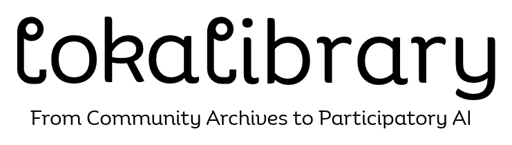

LokaLibrary positions Karnataka’s librarians as cultural data stewards in the age of AI, bridging public knowledge, technology, and community identity.
Karnataka's 8,000+ libraries and 19,000+ librarians serve as knowledge mediators between diverse communities and digital information ecosystems, from village panchayat libraries to city public archives.
As AI reshapes access to information, this group stands at the frontline of digital inclusion, yet most lack a conceptual or practical understanding of AI and Generative AI tools. This initiative aims to:
- Demystify AI for librarians, enabling them to act as trusted interpreters for their communities.
- Localise AI literacy through Kannada and regional contexts.
- Engage librarians to co-create culturally grounded datasets that reflect local knowledge, imagery, and narratives — helping "teach" AI about Karnataka's diversity.


 Goethe-Institut India
Goethe-Institut India
Unlike generic digital literacy efforts, the program fuses AI toolmaking, open-data ethics, and cultural participation into one integrated framework — delivered bilingually through Gooey.AI’s participatory workflows.
A co-created approach beginning with a working roundtable that brings together partners and community representatives to shape the fellowship around real needs and aspirations.
Gooey.AI provides low-code, multilingual generative AI storytelling tools tailored for accessibility, enabling participants to create and publish content in their own languages and cultural contexts.
Combines international cultural exchange and educational expertise to situate local voices within global conversations on AI literacy and future-proofing librarians.
Leverages networks of rural and peri-urban storytellers and community journalists to ensure the program remains authentic, relevant, and socially rooted.
Builds on Jaaga’s experience from the AI Futures Fellowship for Women to scale a tailored version of the program to this group.
Integrates AI tools that support creation in Kannada, addressing linguistic bias and expanding digital inclusion.
Designed for replication across geographies and communities, creating a blueprint for inclusive, community-led AI education and creative expression.
This initiative uniquely positions Karnataka's librarians as cultural data stewards in the age of AI, bridging public knowledge, technology, and community identity. Unlike generic digital literacy efforts, it fuses AI toolmaking, open-data ethics, and cultural participation into one integrated framework. Delivered bilingually through Gooey.AI's participatory workflows, the program empowers librarians to not only understand AI but to shape it, curating datasets that reflect Karnataka's languages, imagery, and heritage.
The vision is to transform libraries into living laboratories of inclusive innovation, where citizens encounter AI as something they can question, train, and trust. By teaching AI to see Karnataka through its libraries, the project models how public institutions can lead in building ethical, locally grounded, and globally resonant AI ecosystems, a blueprint for participatory AI emerging from the Global South
Working with librarians as co-designers, we will develop local community created bird field-guides that document local bird species through naming, observation, description, and collective knowledge gathering. Librarians will facilitate participatory processes within their communities, creating place-based guides that foreground local perspectives and knowledge systems and offer alternatives to more conventionally colonial approaches to natural history documentation. Each participating library will contribute pages to a community-fuelled guide of birds across Karnataka, collectively creating a rich, plural, and regionally grounded record of avian life.
Building on these field-guides, librarians and their communities will explore how birds live within local stories, literature, and folk art traditions. From the pages they create, librarians will selectively develop fantastical animated birds, reimagining species through local narratives, legends, and heroes. Each librarian will then be invited to create a short looped video clip that brings these interpretations to life, interweaving folk representations of birds with observations and footage of the birds themselves. The programme and its outcomes will be co-developed with participating librarians, ensuring that both process and outputs emerge from local contexts and community knowledge.
A 3-month pilot program with 31 Fellows across districts — combining online AI foundations, workshops, hands-on assignments, and the development of the Beyond Bias AI Library of Commons. Librarians can expect to dedicate approximately 10 hours per week to workshops, learning activities, and assignments throughout the program.
Open repository of community-created datasets and works.
Celebrating the fellows’ work and the commons.
Tell us how you’d like to contribute, or ask a question.
Try the low-code, multilingual AI tools the fellows use to create and publish in their own languages.